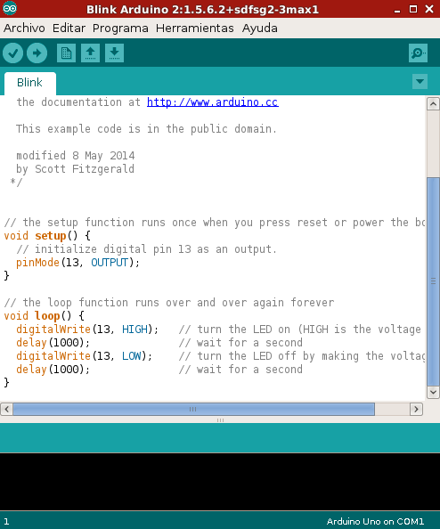

En Computación física >> Ejemplos de programación real de Arduino ya vimos un avance de este entorno y del lenguaje que se utiliza.
El aspecto del entorno de desarrollo de Arduino IDE es este:

La estructura básica de programación de Arduino es bastante simple y divide la ejecución en dos partes: setup y loop. La función setup() constituye la preparación del programa y loop() es la ejecución. En setup() se incluye la declaración de variables y se trata de la primera función que se ejecuta en el programa. Esta función se ejecuta una única vez y es empleada para configurar el pinMode (p. ej. si un determinado pin digital es de entrada o salida) e inicializar la comunicación serie. La función loop() incluye el código a ser ejecutado continuamente (leyendo las entradas de la placa, salidas, etc.).
Como se observa en este bloque de código cada instrucción acaba con ; y los comentarios se indican con //. Al igual que en C se pueden introducir bloques de comentarios con /* ... */.